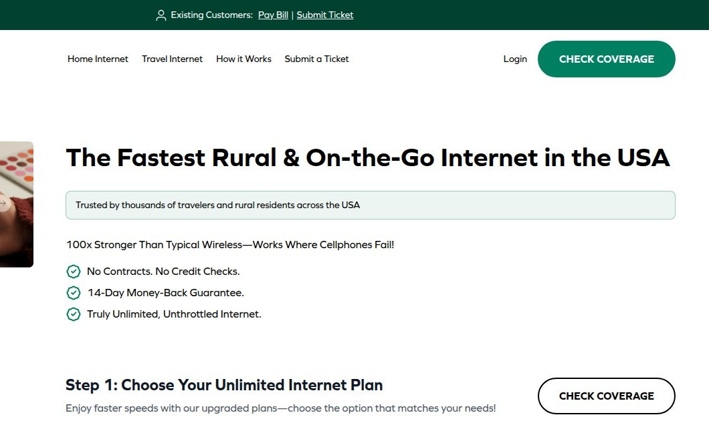

Pricing appears only after qualification flow
No pricing is shown until the visitor completes the coverage/qualification form, so cost is discovered late in the journey.
Value proposition lacks specifics
The hero headline promises reliability anywhere but fails to state what is sold or why it is better, leaving visitors without concrete reaso


Social proof concentrated on homepage
Customer testimonials and press mentions appear only on the homepage and rural-internet page, not on plans pages where purchase decisions ar

Heavy third-party script load
The homepage loads 65 scripts, which is the usual root cause of slow interaction readiness on mobile.

Multiple competing primary CTAs
Seven distinct calls to action on the homepage create ambiguity about the intended next step, diluting focus.

Multiple qualification CTAs compete
Multiple qualification and coverage CTAs on the same viewport overload visitors with choices, delaying the primary conversion path.